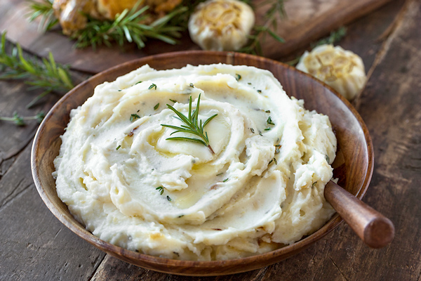

They’re ultra-rich and blissfully creamy, and the sour cream gives them a delicious tangy kick. They’re easy to make (and make ahead!), and they’re guaranteed to be a crowd pleaser at Thanksgiving or any meal. You’re going to love this mashed potatoes recipe.
The table below shows nutritional values per serving without the additional fillings.
| Calories | 214cal |
| Carbs | 35g |
| Protein | 4g |
| Fat | 7g |